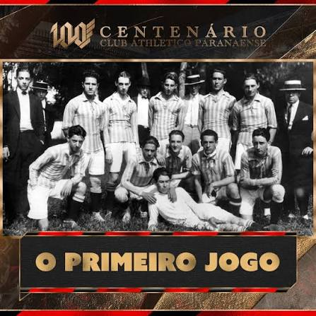
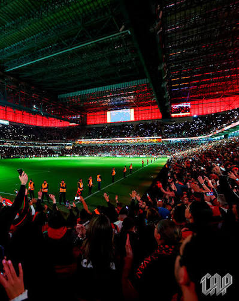
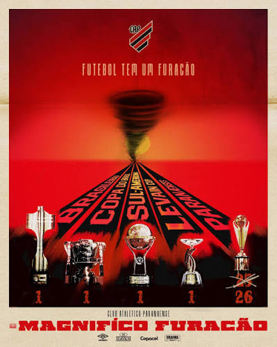
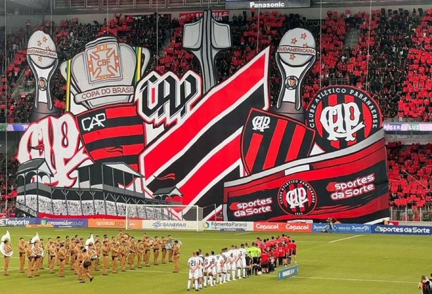

O Nascimento do Furacão

O Club Athletico Paranaense não nasceu por acaso; ele surgiu da união de duas forças de Curitiba em 1924: o International Foot-Ball Club e o América Foot-Ball Club. Essa fusão deu origem a uma identidade forte, vestindo o vermelho e o preto que hoje conhecemos tão bem.
O apelido "Furacão" veio logo depois, na década de 1940, após uma sequência avassaladora de goleadas que mostrou para todo o Brasil que aquele time não entrava em campo de brincadeira. É uma história de paixão que atravessa gerações.
Caldeirão Tecnológico (A Ligga Arena)

Se tem uma coisa que o Athletico sabe fazer bem é ditar tendências, e a Ligga Arena é a prova viva disso. Conhecida historicamente como Joaquim Américo (ou Arena da Baixada), ela se transformou no estádio mais moderno da América Latina.
Com um teto retrátil impressionante que fecha em poucos minutos e gramado sintético de padrão FIFA, a Arena é um verdadeiro caldeirão tecnológico. Para quem visita, a experiência de design e a proximidade da torcida com o campo criam uma atmosfera única no futebol mundial.
As Grandes Conquistas

A sala de troféus do Rubro-Negro é pesada! O grande divisor de águas foi a conquista do Campeonato Brasileiro de 2001, liderado por um ataque histórico que balançou as redes de todo o país.
Nos anos recentes, o Furacão consolidou sua força continental ao levantar as taças da Copa Sul-Americana (em 2018 e 2021) e da Copa do Brasil (em 2019). O Athletico deixou de ser uma força regional para se tornar um protagonista temido e respeitado em toda a América do Sul.
A Força das Arquibancadas

Nenhum clube se torna gigante sem uma torcida apaixonada. A torcida do Athletico Paranaense é conhecida por cantar o tempo todo e criar uma pressão psicológica absurda nos adversários dentro do Caldeirão.
O famoso "Por Amor ao Athletico" não é só um lema, é um estilo de vida para milhares de torcedores que lotam as arquibancadas, balançam as bandeiras e empurram o time nos momentos mais difíceis. É o coração do clube batendo forte a cada noventa minutos.